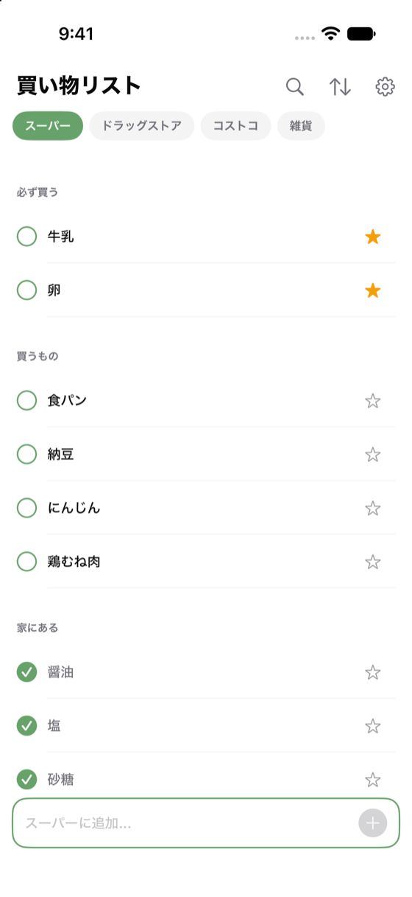
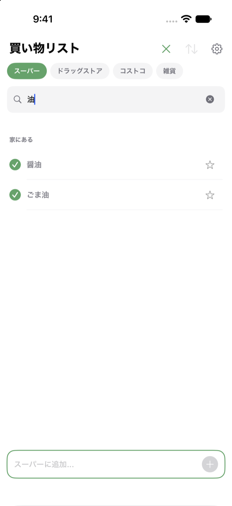
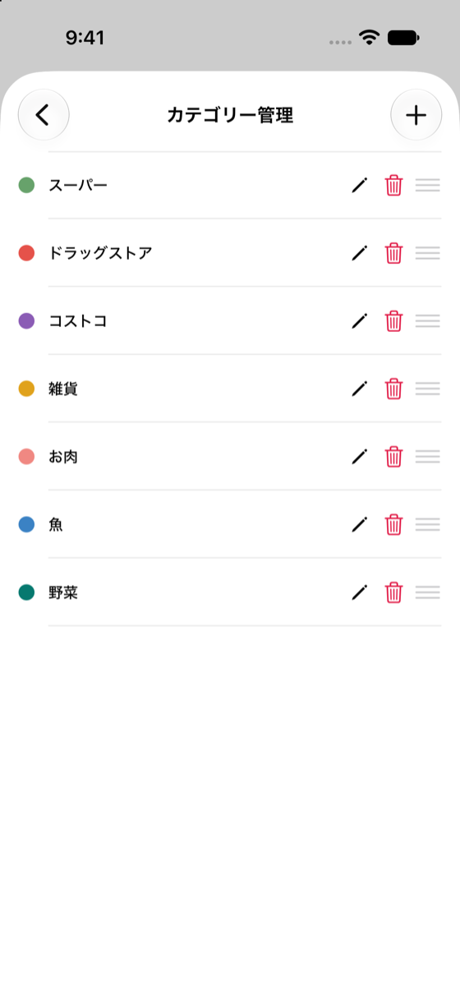

チェックは「買った」ではなく、
「今、家にある」という印です。
アイテムは、スターとチェックの組み合わせで3つに分かれます。タップするとその場で並び替わります。

冷蔵庫や棚を見ながら、切れたもののチェックを外します。今日必ず買うものにはスターを付けます。
上から順に「必ず買う」「買うもの」を見ていき、カゴに入れたらチェックを付けます。そのまま「家にある」状態になります。
その操作はありません。チェックは「買い終わった印」ではなく「今、家にある印」なので、買ったものはチェックが付いたままで正しいからです。外すのは在庫が切れたときで、1件ずつで足ります。
できません。アイテムが持てるのは名前だけです。1画面で完結する分かりやすさを優先しています。
できません。データはお使いの端末の中だけに保存されます。
ヘッダーの虫めがねを押すと、開いているカテゴリーの中を名前で絞り込めます。ひらがなとカタカナ、半角と全角は区別しません。
ただし読みでは引けません。「しょ」と打っても「醤油」には当たりません。

戻せません。削除は取り消しができないので、入れ直してください。なおカテゴリーを消すと、中のアイテムもすべて消えます。消す前に件数の確認が出ます。

端末のバックアップ（iCloud など）からの復元であれば、買い物リストも一緒に戻ります。アプリ単体で書き出す機能はありません。
端末の「設定 ＞ 画面表示と明るさ ＞ テキストサイズ」に合わせて大きくなります。表示の明暗も端末の設定に合わせます（アプリ内に切り替えはありません）。
上で解決しない場合や、不具合のご報告は下記までお願いします。お使いの iPhone の機種と iOS のバージョンを書き添えていただけると、お返事が早くなります。